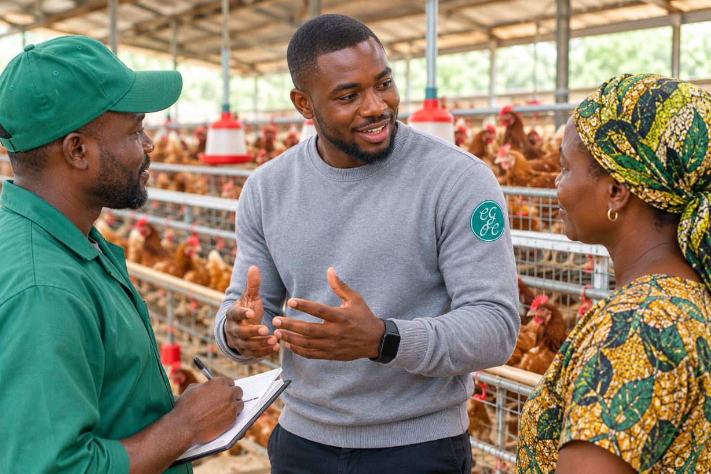

RESEARCH · TRIALS · DEVELOPMENT
Science that
nourishes.
We bring research, experimentation and science closer to the farm, developing practical solutions and farming practices that work.
RESEARCH
BETTER FARMING
Okafor Agriscience is an agricultural research and product development business focused on solving real farming challenges.
Through research, experiments and field trials, we evaluate farming practices, develop improved approaches and translate our findings into practical knowledge and solutions for farmers.
How we work →We investigate challenges and opportunities across crop production and livestock farming.
Crop research, growing trials and improved production practices.
Research into bird health, nutrition, breeding and farm management.
Research into pig breeding, nutrition, health and production systems.

Agricultural progress comes from better knowledge, informed decisions and practices that deliver results. Our work is focused on helping farmers improve productivity, strengthen their operations and achieve better outcomes.
Every farm has questions. Which method gives better results? What works best under local conditions? How can a farmer reduce waste, improve performance and work more efficiently?
We use practical experiments and field trials to find answers that can make a difference on the farm.
Identify challenges, study existing knowledge and explore possible approaches.
Conduct experiments and trials under practical farming conditions.
Compare results, assess performance and identify effective approaches.
Translate useful findings into improved practices, products and farming solutions.
Research becomes valuable when it helps farmers make better decisions. We aim to make our findings useful, understandable and practical.
Practical recommendations informed by crop research and field trials.
Tested approaches to help improve daily decisions and farm performance.
New products and solutions developed from identified farming needs.
Our research and development work can lead to products, improved production methods and new solutions for crop and livestock farming.
Talk to our team ↗Start with the right knowledge. Contact us to discuss your farming plans and learn how research-informed practices can help you establish your operation, avoid common mistakes and work towards better results.
Contact Okafor Agriscience ↗